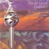
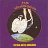
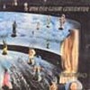
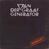
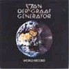
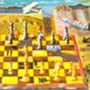

strange music page
progressive * * * van der graaf generator/peter hammill
#決してPeter Hammillだけのバンドじゃないと思います。
混沌とした力強さ。
www.vandergraafgenerator.co.uk
|
- Van der Graaf Generator (1969-1971)
- Van der Graaf Generator (1972-1973)
- Van der Graaf
- Peter Hammill
|
#はじめて買ったVdGGのアルバムです、そのせいか結構気に入っています。サイケな雰囲気を残しつつ、荒削りな混沌さが現れ始めています。穏やかな部分と混沌とした部分のコントラストが好きです。次のアルバムでは混沌具合がさらに増えて行きます。

- Darkness (11/11)
- Refugees
- Whatever Would Robert Have Said?
- Out of my Book
- After the Flood
- Hugh Banton (organ,piano,backing vocals)
- Peter Hammill (acoustic guitars,vocals)
- Nic Potter (bass,guitars)
- Guy Evans (drums,percussions)
- David Jackson (saxes,flute,backing vocals)
#"天地想像"ってなんだかスゴイタイトルですね、悪く無いけど。プログレの中でも特殊なバンドです、構築と混沌が混在している感じです。P.Hammillでしか有り得ない音楽。円周率みたいにずーっと割り切れない所に存在するような音です。

- Killer
- House With No Door
- The Emperor In His War-Room
Part 1: The Emperor
Part 2: The Room
- Lost
Part 1: The Dance In Sand And Sea
Part 2: The Dance In The Frost
- Pioneers Over c.
- Peter Hammill (vocals,acoustic guitars)
- Hugh Banton (organ,piano,oscillator,vocals)
- Guy Evans (drums,percussions,tympani)
- David Jackson (saxes,flute)
- Nic Potter (bass on 1.3.4.)
- Robert Fripp (guitars on 3.)
VIRGIN RECORDS: CASCD-1027 (original release 1970)
#B面すべてを使った大曲が収録されています。前期VdGGのピークのアルバムと思われます(私は内容的には"The Least We Can Do..."が好きですが)一応Robert Frippがゲスト参加しているようですが、VdGGの中に入ってしまうとほとんど目立てなかったりしています。

- Lemmings (Includig Cog)
- Man-Erg
- A Plague of Lihthouse Keepers
- Eyewitness
- Pictures/Lighthouse
- Eyewitness
- S.H.M.
- Presence of The Night
- Kosmos Tours
- (Custard's) Last Stand
- The Clot Thickens
- Land's End (Sineline)
- We Go Now
- Peter Hammill (vocals,guitars,piano)
- Hugh Banton (keyboards,mellotron,synthesizers,bass)
- Guy Evans (drums,percussions,tympani,piano)
- David Jackson (saxes,flute)
- Robert Fripp (guitars)
#一応再編後の1枚目になります。前の3枚は意図していなかった混沌/緊張感に比べるとなにかバンドとして、意図してこのスタイルを作っているような感じがします。ただ他のバンド(後期のCrimsonとかU.K.とか)みたいにだれてしまわないのは、P.Hammilのなんか意思っていうかそーゆーものの力だと思います。

- The Undercover Man
- Scorched Earth
- Arrow
- The Sleepwalkers
- Peter Hammil (vocals,piano,guitars)
- Hugh Banton (organ,bass)
- Guy Evans (drums)
- David Jackson (sax,flute)
(original release 1975, Charisma Records)
#Van der Graaf Generatorの6枚めのアルバム、正確に言うとVdGGは4枚めのPawn Heatsを出した後に一度解散しているので再結成後の2枚めにあたります。神経質なPeter Hammillのボーカルに、無軌道というかフリーな印象の演奏が微妙なバランスで拮抗している感じです。
VdGGのアルバムの中では個人的には一番気に入ってます、VdGGの魅力の一つの演奏の破綻は少ないんですが、その分魅力的な(豊潤って表現の方が合うかも)曲がそろってます。

- PILGRIMS
- STILL LIFE
- LA ROSSA
- MY ROOM (Waiting for Wonderland)
- CHILDLIKE FAITH IN CHILDHOOD'S END
- Peter Hammill (vocals,guitars)
- Hugh Banton (organ,piano,keyboards)
- David Jackson (saxes,flute)
- Guy Evans (drums,percussions)
Virgin JAPAN: VJD-28085 (original release 1976 - Charisma Records)

- When She Comes
- A Place To Survive
- Masks
- Meurglys III (The Songwriter's Guild)
- Wondering
- Peter Hammill (vocals,acoustic guitars)
- Hugh Banton (keyboards)
- Guy Evans (drums,percussions)
- David Jackson (saxes,flute)
VIRGIN RECORDS: CASCD-1120 (original release 1976 - Charisma Records)
- Lizard Play
- The Habit Of The Broken Heart
- The Siren Song
- Last Frame
- The Wave
- Cat's Eye/Yellow Fever
- The Sphinx In The Face
- Chemical World
- The Sphinx Returns
#ソロ1枚目です、VdGGよりもより幅の広い音楽をやっているように感じました。とても個人的な"うた"です。VdGGでのバンド内の拮抗による緊張感はここには無いですが、その分ストレートにP.Hammillの何かが伝わって来るような感じがします。
ちなみに、昔プログレ雑誌だったアノ雑誌の名前の由来はこのアルバムだというのは、結構有名な話らしいです。編集長がマニアなんすよね。

- Imperial Zeppelin
- Candle
- Happy
- Solitude
- Vision
- Re-awakening
- Sunshine
- Child
- Summer Song (In The Autumn)
- Viking
- The Birds
- I once worte some poems
- Peter Hammill (vocals,acoustic guitars,piano)
- Guy Evans (drums,percussions)
- Hugh Banton (piano,organ)
- Martin Pottinger (drums)
- Rod Clements (bass,violin)
- Nic Potter (bass)
- Ray Jackson (harp,mandolin)
- Dave Jackson (alto sax,tenor sax,flute)
- Robert Fripp (guitars)
- Paul Whitehead (tam-tam)
Charisma Records: (original release 1971)
- Skin
- After The Show
- Pinting By Numbers
- Shell
- All Said And Done
- A Perfect Date
- Four Pails
- Now Lover
- Peter Hammill
- Guy Evans (drums,percussions)
- David Jackson (sax)
- David Coulter (didjeridu)
- Stuart Gordon (violin)
- Hugh Banton (cello)
- David Luckhurst (voice)
- Paul Ridout (manipulation)
Virgin Records: CDOVD-344 (original release 1986)
- Sharply Unclear
- The Gift of Fire (Precursed)
- The Gift of Fire (Talk Turkey)
- You Can't Want What You Always...
- ...If You Haven't Got It Yet
- A Headlong Stretch
- Up Ahead
- Continental Drift
- The Twelve
- Long Light
- Backwards Man
- As You Were
- Or So I Said
- Your Tall Ship
- Peter Hammill (guitars,keyboards,vocals)
- Manny Ellis (drums)
- Stuart Gordon (violin)
- David Jackson (sax)
- Simon Klarke (organ)
- Nic Potter (bass)
FIE: FIE-9107 (1994)